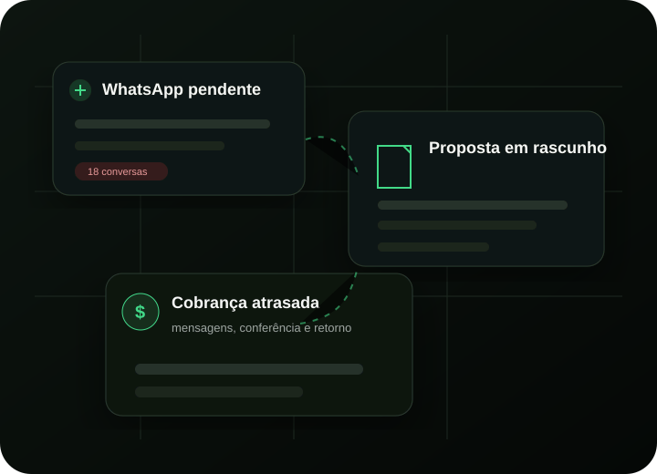
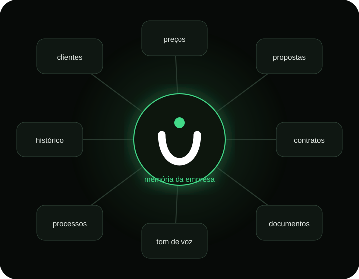
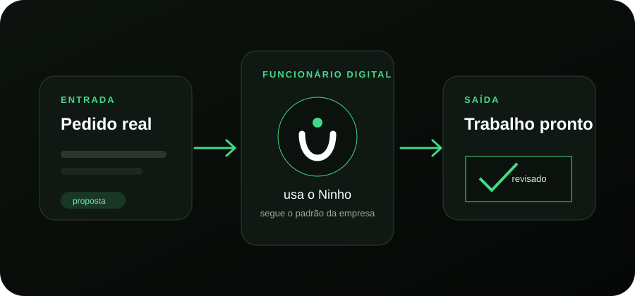

Instalação
Preparamos o ambiente no seu computador.
Em duas horas, colocamos um funcionário digital para trabalhar dentro da sua empresa. Você termina o encontro com a primeira tarefa pronta.
Não é curso nem consultoria. A implantação acontece com você, na sua empresa.

Tudo isso custa tempo.
Não inteligência.

Você não precisa contratar mais pessoas. Precisa parar de desperdiçar as que já tem.
Você não precisa de mais uma ferramenta para operar. Precisa receber o trabalho pronto no padrão da sua empresa.

O Ninho guarda o que o funcionário digital precisa saber para trabalhar como alguém de dentro. Você explica uma vez. Depois, esse conhecimento acompanha cada tarefa.
Não é uma aula. Nós fazemos a implantação com você, usando uma tarefa real da sua empresa.
Preparamos o ambiente no seu computador.
Organizamos a memória da empresa.
Colocamos uma tarefa real para funcionar.
Você termina com o primeiro trabalho entregue.

Comece por uma tarefa real. Depois, amplie conforme a operação ganha tempo.
Respostas no padrão da empresa, com contexto e próximo passo organizado.
Pendências organizadas e mensagens prontas.
Rotina vira revisãoDocumentos prontos no seu modelo.
De horas para minutosDados organizados para decisão.
Uma tarde vira minutosDocumentos conferidos e rotinas preparadas.
Menos retrabalhoMateriais no tom e no padrão da marca.
Mais consistência
Se nos primeiros 30 minutos eu não encontrar uma oportunidade real para economizar tempo ou dinheiro na sua empresa, encerramos a call e devolvemos 100% do valor.
Continuando a fazer tudo manualmente.
Com um funcionário digital trabalhando por você.